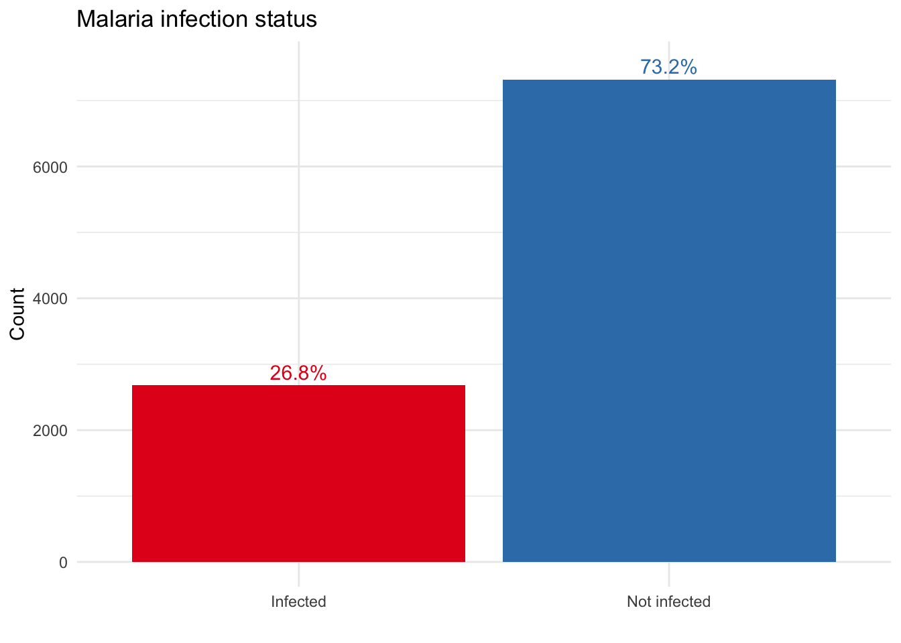
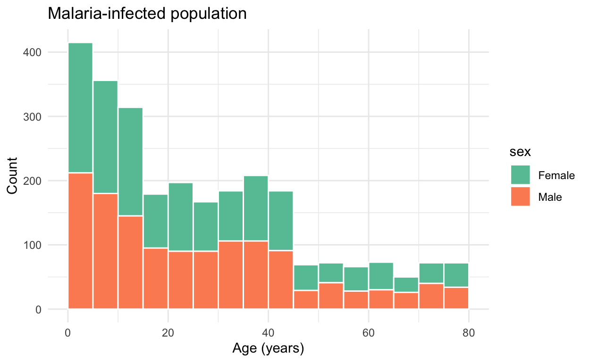

Introduction
Welcome to Module 1: Sampling from a population.
In this module, we’ll explore how to relate samples to populations, calculate confidence intervals, and understand the impact of sample size on study results. To introduce these statistical concepts, we’ll start with a simple example focused on determining the prevalence of malaria. This approach provides a gentle introduction to thinking about these ideas in the context of study design. These same concepts are directly applicable to malaria molecular surveillance (MMS) studies. For instance, in MMS studies, we might design our research to estimate the prevalence of molecular markers, such as drug resistance markers, rather than the prevalence of malaria infection itself.
Learning Outcomes
By the end of this tutorial, you will be able to:
- Define the target population for a study.
- Differentiate between a population and a sample.
- Calculate the 95% confidence interval.
- Assess how sampling variability impacts the representation of the population.
- Understand the effect of sample size on confidence intervals.
What is my population?
In any study, clearly defining the target population is crucial. Let’s consider a few examples of made-up studies.
Relating the sample to the population
Sampling the entire population is often impractical, whether due to cost constraints or the challenges of reaching everyone. Fortunately, we can design our study to ensure that the sample we collect is a representative subset of the population.
When designing epidemiological studies, various data sources can offer valuable insights into the population. Examples include Demographic and Health Surveys (DHS) or population censuses, which provide comprehensive information to help guide study design.
Using the population census
Let’s go back to our made-up study.
We now have access to a census of the entire population of the village (N= 10000) with information on each residents age and sex. For purposes of this tutorial, there are 2678 people in the village with malaria infections and we “know” the true infection status of every individual. This will help us understand how our sample relates to the entire population.
This is the information we have in the census (here we show the first 6 residents in the census):
| id | age | sex | malaria_infection |
|---|---|---|---|
| 1 | 27 | Male | Not infected |
| 2 | 79 | Female | Not infected |
| 3 | 21 | Female | Infected |
| 4 | 8 | Female | Not infected |
| 5 | 4 | Male | Not infected |
| 6 | 37 | Male | Infected |
Population demographics
Below we can see a breakdown of malaria-infected individuals in this population.

Let’s look at the age and sex distribution.

Sampling from the population
Suppose we have resources to determine the infection status of 200 individuals. Let’s randomly sample 200 individuals from the population and see how they compare with the overall population. We can explore demographic differences by plotting the age and sex distribution of the sample compared with the population.
Below we use the function sampleFromPopulation() and we
specify what our sample size is and from where we want to sample (in our
case from the census data). We can use the
plotAgeSexDistribution() and
plotInfectedProportion() functions to visualize our
results. Click on “Run Code”.
sample <- sampleFromPopulation(sample_size = 200, census)
comparison <- compareSampleToPopulation(sample, census)
plotAgeSexDistribution(comparison)
plotInfectedProportion(comparison)Reflection:
Do we see a similar age and sex distribution? What about the proportion of infected and not infected individuals in the population?
Sampling many times from the population
Now run this a few times with the sample size of 200 to see how it changes with every random sample. Click “Start Over” and then “Run code”.sample <- sampleFromPopulation(sample_size = 200, census)
comparison <- compareSampleToPopulation(sample, census)
plotAgeSexDistribution(comparison)
plotInfectedProportion(comparison)Reflection:
Smaller sample sizes are more susceptible to sampling variability. With a limited number of individuals, the likelihood of the sample deviating from the population characteristics increases. Think about how this may or may not impact your results.
✨ BONUS QUESTION ✨
You will have noticed from our exploration above that the sample differs from the population and it doesn’t always have the same age and sex distribution.
Estimating prevalence in our sample and calculating the 95% confidence interval
Our next topic focuses on calculating the 95% confidence interval (CI) using the Wald method. When estimating the prevalence of malaria in a sample, we start with a point estimate. However, it’s equally important to calculate the 95% CI to capture the variability around this estimate. The CI provides an interval with defined lower and upper bounds, representing the range within which we are 95% confident the true population prevalence lies. In other words, if we were to repeat the sampling process many times and calculate a confidence interval for each sample, approximately 95 out of 100 of these intervals would contain the true population prevalence.
Estimating prevalence in our sample
For this exercise we have already pre-calculated some useful parameters:
- Defined
sample_sizeto be 200 - Defined
infected_countto be the number of infected individuals in our sample (in our example it is 69 individuals) - Defined the function
sampleFromPopulation()to select 200 individuals at random from our census
Below is the code we ran for reference, but you don’t have to run it yourself as everything is already loaded.
# set the sample size
sample_size <- 200
# sample from the population
sample_data <- sampleFromPopulation(sample_size, census)
# Count number of infected individuals in the sample
infected_count <- sum(sample_data$malaria_infection == "Infected")What is the estimated prevalence of malaria in our sample?
We can calculate this by dividing the number of individuals infected with malaria by our sample size.
Try coding it yourself, or click on the solution. Note: In R when
we want to divide two things we can use /.
69 / 200
# Or you can use the stored variables:
infected_count / sample_size
Click
to see the answer
Our estimated prevalence is 0.345 or 34.5%.
Calculating the 95% CI
Next, we need to calculate the 95% CI around our point estimate.
This is the formula for the Wald confidence interval:
\[ CI = \hat{p} \pm z_{1 - \alpha/2}\sqrt{\frac{\hat{p}(1-\hat{p})}{n}} \] Where:
- \(\hat{p}\) = sample proportion
- \({n}\) = sample size
- \(\ z_{1 - \alpha/2}\) = critical value of the normal distribution at significance level \(\alpha\) (two sided)
We will now go through this formula step-by-step!
1. Defining our sample proportion, \(\hat{p}\)
The sample proportion refers to the proportion of infected
individuals in our sample. We just calculated this above by dividing the
number of infected individuals in the sample by the total sample size.
Let’s do it again for good measure, and record it as
p_hat.
p_hat <-# Sample proportion
p_hat <- infected_count / sample_size
p_hat2. Sample size, \(n\)
Above, we defined our sample size to be n=200 and recorded it as
sample_size.
3. Calculating the standard error
We can calculate the standard error using p_hat and
sample_size. We can calculate the standard error using:
\[ SE = \sqrt{\frac{\hat{p}(1-\hat{p})}{n}} \]
Note: In R the function to take the square root is
sqrt() and when we want to multiply two things we can use
*.
SE <- # Standard error
SE <- sqrt((p_hat * (1 - p_hat)) / sample_size)
SE
Click
to see the answer
Our standard error is 0.034.
4. Calculating the confidence interval
Now that we know our standard error, we can calculate the lower and upper bounds of our 95% confidence interval (CI). To do this, we multiply the standard error by \(z_{1-\alpha/2}\) , which is approximately 1.96 for a 95% CI. This factor is derived from the normal distribution, where 95% of the probability lies within 1.96 standard deviations of the mean, ensuring our interval reflects this range of uncertainty.
Let’s start with the lower bound. Click on the solution if you need help.# Critical value for 95% confidence
z_alpha <- 1.96
# Lower bound# Critical value for 95% confidence
z_alpha <- 1.96
# Lower bound
p_hat - z_alpha * SE
Click
to see the answer
Our lower bound is 0.279 or 27.9%.
# Critical value for 95% confidence
z_alpha <- 1.96
# Upper bound# Critical value for 95% confidence
z_alpha <- 1.96
# Upper bound
p_hat + z_alpha * SE
Click
to see the answer
Our upper bound is 0.411 or 41.1%.
infected_count <- 69
sample_size <- 200
z_alpha <- 1.96
p_hat <- infected_count / sample_size
SE <- sqrt((p_hat * (1 - p_hat)) / sample_size)
CI_lower <- p_hat - z_alpha * SE
CI_upper <- p_hat + z_alpha * SE
# Print our values
p_hat
CI_lower
CI_upperSo, putting it all together, our estimated prevalence is 0.345 or 34.5% and our 95%CI is 27.9% to 41.1%.
Comparing to the true prevalence
You may remember from our exploration of the census data earlier, that 26.78% of our population was infected with malaria, in others this is the true prevalence.
Reflection:
Do you always expect the true prevalence to fall within the 95%CI?
How often does true prevalence fall within the 95%CI?
We explored above what would happen if we randomly sampled 200 individuals. In this first example, the true prevalence didn’t fall within the 95%CI. But this was just one example. Now we want to see what happens if we repeat this sampling many times. Let’s now explore by running a simulation where we sample 1000 times and we will count how many times our true prevalence is within the 95%CI.
Reflection:
Before you run the below code, think about the intuition behind this - how often do you expect the true prevalence to be within the 95%CI?
Now run the code and see if you were correct!
n_simulations <- 1000
sample_size <- 200
results <- replicate(n_simulations, simulate_CI(census, sample_size, true_prevalence))
plotCISimulationResults(results, n_simulations)After running the simulation, you should notice that the true prevalence falls within the 95% confidence intervals in approximately 95% of the simulations. This outcome aligns with the definition of a 95% confidence interval: if we were to repeat the sampling process many times, we would expect the true parameter to lie within the calculated confidence interval about 95 out of 100 times.
Reflection:
This simulation demonstrates the concept of confidence level in statistical inference. It shows that the method we use to calculate confidence intervals is reliable in the long run. However, in any single sample (like the one we initially took), there’s still a chance (about 5%) that the true prevalence will not be captured within the interval. This is why it’s important to interpret confidence intervals correctly and understand that they provide a measure of the uncertainty associated with our estimates.
✨ BONUS QUESTIONS ✨
Note: This section is optional and requires more coding than the previous exercise
Let’s repeat this exercise for a sample size of 500. Try coding it yourself from scratch using the functions that we used above. Click on the solution if you get stuck!
sample_size <- 500sample_size <- 500
sample_data <- sampleFromPopulation(sample_size, census)
comparison <- compareSampleToPopulation(sample_data, census)
plotAgeSexDistribution(comparison)
plotInfectedProportion(comparison)
infected_count <- sum(sample_data$malaria_infection == "Infected")
p_hat <- infected_count / sample_size
SE <- sqrt((p_hat * (1 - p_hat)) / sample_size)
CI_lower <- p_hat - Z * SE
CI_upper <- p_hat + Z * SE
checkPrevalenceCI(true_prevalence, CI_lower, CI_upper)
n_simulations <- 1000
results <- replicate(n_simulations, simulate_CI(census, sample_size, true_prevalence))
plotCISimulationResults(results, n_simulations)Reflection:
Does the true prevalence (26.78%) fall within our 95% CI? What do you notice about the simulation results?